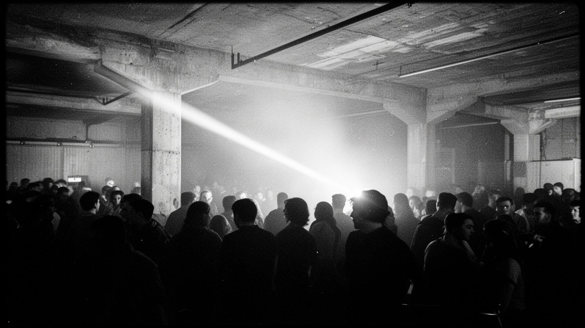
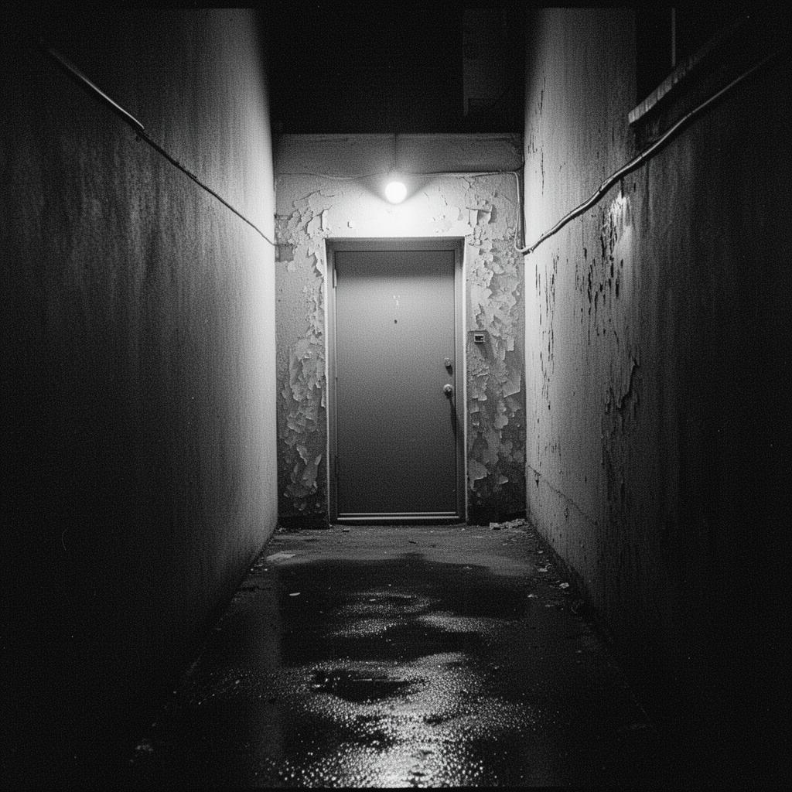
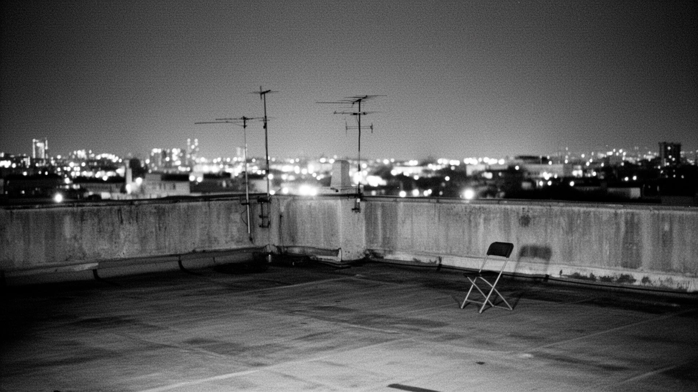

Estrutura industrial desativada na zona portuária. Pé direito de 12 metros. Som ressoa nas vigas metálicas. Entrada pelo beco lateral, porta sem identificação. Senha rotativa.



Imóvel originalmente registrado como armazém de cabotagem. Desativado em 1997. Reativado de forma não oficial em 2021 por coletivo anônimo. Acesso por convite ou por reconhecimento facial entre frequentadores antigos.
Sistema de som montado sob a viga central. Quatro torres. Capacidade não-oficial estimada em 600 corpos. Saídas de emergência marcadas com fita laranja fluorescente.
Recomenda-se chegada após meia-noite. Bebida trazida do exterior é tolerada. Captura de imagem é motivo de expulsão imediata.